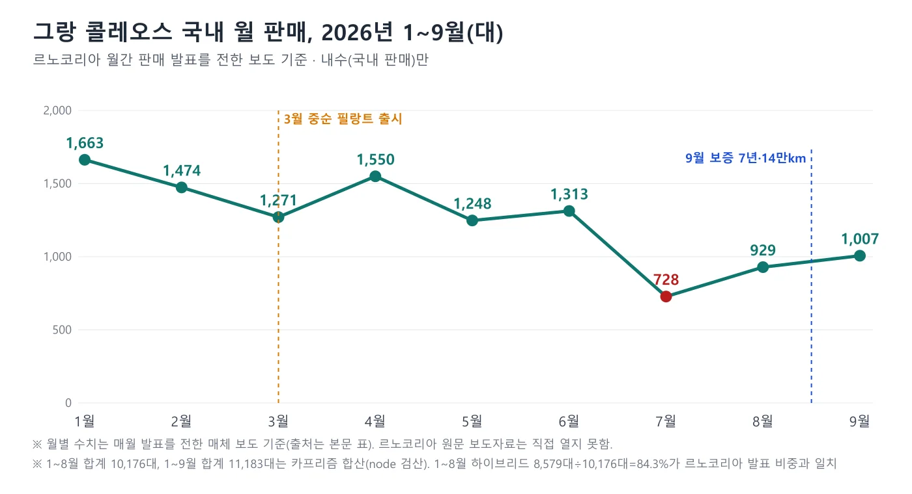
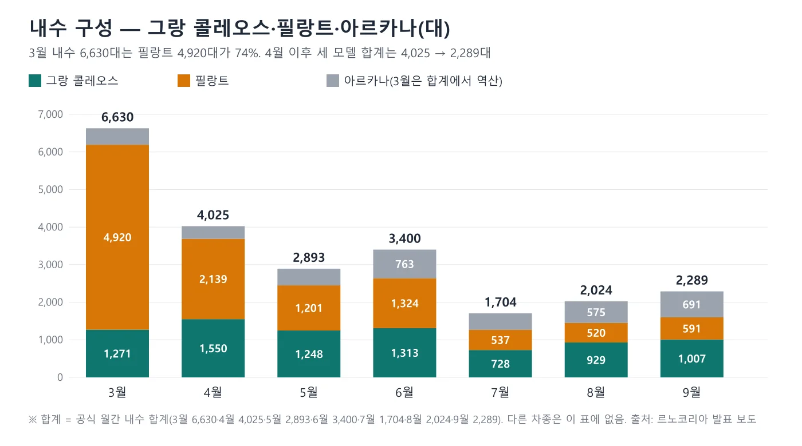
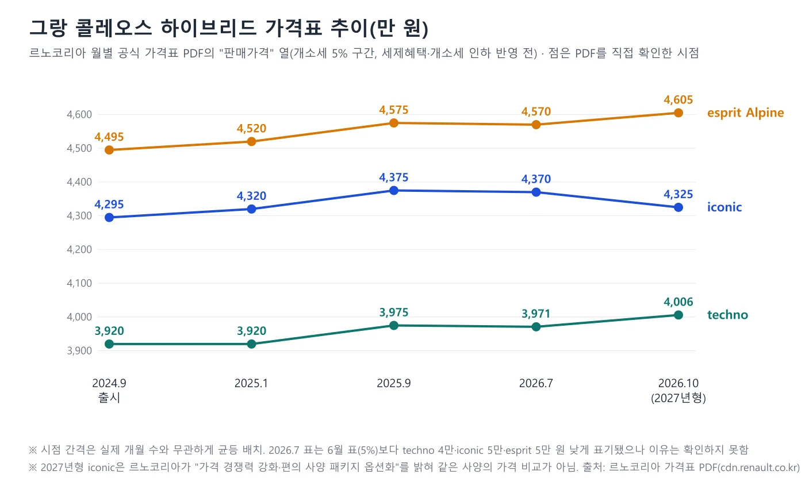
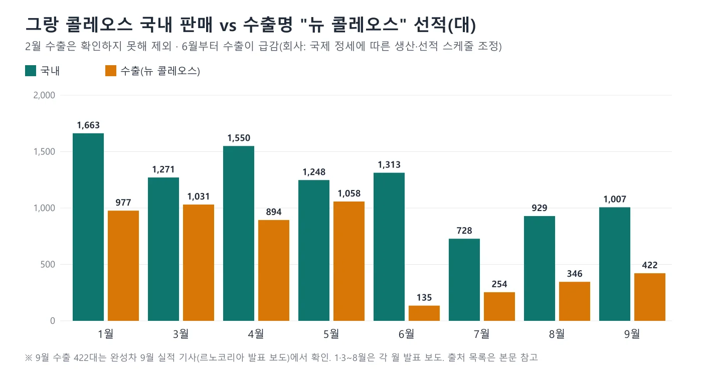

▲ 국내 주차장에 선 그랑 콜레오스(검은색 차체). 사진만으로는 연식·트림·파워트레인을 확정할 수 없다 ⓒ Damian B Oh, CC BY-SA 4.0, Wikimedia Commons
"작년 8월 2,903대, 올해 8월 929대." 그랑 콜레오스의 국내 판매가 1년 새 68.0% 줄었다. 그런데 르노코리아가 매달 내놓은 판매 발표를 전한 보도로 올해 1월부터 9월까지 월별로 모으면, 바닥은 8월이 아니라 7월 728대였고 9월은 1,007대로 두 달 연속 늘었다. 1월 1,663대에서 7월 728대까지 56.2% 내려갔다가 9월에 1,007대(7월 대비 +38.3%)로 돌아온 곡선이다. 이 글은 9개월 치 월별 내수 수치와 출처, 필랑트와 합친 내수 구성, 작년과의 비교, 르노코리아 공식 가격표 PDF로 확인한 출시 후 가격 추이(개소세 5% 기준)를 정리한다. 한 매체 숫자를 그대로 옮기지 않고 월마다 보도와 누적 수치로 맞춰 봤다.
이 글은 그랑 콜레오스 한 모델의 월별 흐름이다. 9월 내수 -45.3%와 중국 업체 협력을 다룬 중국 맞손 9월 내수 기사, 필랑트의 4개월 판매는 필랑트 판매 4개월 기사, 7년·14만km 보증은 르노코리아 보증 확대 기사, 완성차 5사 9월 합계는 9월 완성차 5사 실적 기사에서 먼저 다뤘다. 이번에는 그 숫자들을 월별로 이어 붙이고 가격표 추이를 더했다. 같은 급 4종의 하이브리드 가격 비교는 중형 하이브리드 SUV 가격 사다리 기사에 있다.
1. 숫자의 출처 — 뉴스룸에 월간 판매는 없었다
먼저 어디서 확인했는지부터 밝힌다. 르노코리아 공식 뉴스룸(renault.co.kr)의 뉴스 목록에서 2025년 2월부터 2026년 10월 2일까지 게시글 제목 약 80건을 열람했지만 월간 판매 실적을 알리는 글은 찾지 못했다(일부 쪽은 열람하지 못했다). 월간 실적은 매달 1일 전후 언론에 배포되는 보도자료로 알려지고, 이 글의 수치는 그 보도자료를 전한 보도에서 가져왔다. 그래서 "공식 발표를 전한 보도 기준"이고, 르노코리아 원문 보도자료를 직접 대조한 것은 아니다.
| 월 | 그랑 콜레오스 내수 | 전월 대비 | 르노코리아 내수 합계 | 그랑 콜레오스 비중 | 확인한 보도 |
|---|---|---|---|---|---|
| 1월 | 1,663 | - | 2,239 | 74.3% | 헤럴드경제(2.1) |
| 2월 | 1,474 | -11.4% | 약 2,000(역산) | 약 73.7% | MTN(3.9) |
| 3월 | 1,271 | -13.8% | 6,630 | 19.2% | 오토뷰 |
| 4월 | 1,550 | +22.0% | 4,025 | 38.5% | 디지털데일리(5.4) |
| 5월 | 1,248 | -19.5% | 2,893 | 43.1% | 오토뷰, 헤럴드경제(5.31) |
| 6월 | 1,313 | +5.2% | 3,400 | 38.6% | 헤럴드경제(7.1) |
| 7월 | 728 | -44.6% | 1,704 | 42.7% | 오토뷰 |
| 8월 | 929 | +27.6% | 2,024 | 45.9% | 오토뷰, 스타뉴스 |
| 9월 | 1,007 | +8.4% | 2,289 | 44.0% | 인사이트(10.1) |
2월 내수 합계는 르노코리아가 8월 발표에서 밝힌 1~8월 내수 누적 24,915대에서 다른 달(1월 2,239, 3월 6,630, 4월 4,025, 5월 2,893, 6월 3,400, 7월 1,704, 8월 2,024대)을 뺀 값 2,000대이므로 공식 수치가 아닌 본지 역산이다. 전월 대비는 그랑 콜레오스 월 판매를 본지가 계산한 값이다. 그랑 콜레오스 비중은 본지 계산(그랑 콜레오스÷내수 합계)이다.
📍 숫자를 이렇게 맞춰 봤다
첫째, 월 합계가 공식 누적과 맞는다. 르노코리아는 8월 발표에서 그랑 콜레오스 출시(2024년 9월) 후 24개월 누적 73,087대를 밝혔고 5월 발표에서는 21개월 누적 70,117대를 밝혔다. 두 값의 차이 2,970대는 6월 1,313+7월 728+8월 929=2,970대와 정확히 같다. 둘째, 올해 1~8월 합계 10,176대가 같은 발표의 1~8월 하이브리드 누적 8,579대와 하이브리드 비중 84.3%에 맞는다(8,579÷10,176=84.3%). 셋째, 총판매 합계도 맞는다. 1~8월 월별 총판매(3,732·3,893·8,996·6,199·5,913·4,651·3,030·4,261대)를 더하면 40,675대로 발표된 1~8월 누적과 같다. 9월 발표까지 더한 1~9월 총판매 47,231대(40,675+6,556)도 완성차 5사 9월 기사가 전한 르노코리아 1~9월 누적과 같다. 다만 월별 값은 대부분 매체 한 곳의 보도로 확인했을 뿐 같은 방식의 독립 검산은 하지 못했다.

▲ 2026년 1~9월 그랑 콜레오스 국내 월 판매. 7월 728대가 바닥이고 9월 1,007대까지 두 달 연속 늘었다 ⓒ 카프리즘 제작(르노코리아 발표 보도 기준)
2. 9개월의 곡선 — 1,663대에서 728대, 그리고 1,007대
9개월 월평균은 1,243대, 중앙값은 3월의 1,271대다. 1~5월은 1,248~1,663대 사이에서 움직였고(합계 7,206대) 6월 1,313대까지 비슷했다. 꺾인 것은 7월이다. 728대로 전월 대비 44.6% 줄었고 6~9월 합계는 3,977대(월평균 994대)다. 1~5월 월평균은 1,441대였으므로 6월 이후 평균은 31% 낮다(994÷1,441). 8월과 9월은 929대와 1,007대로 두 달 연속 증가했지만 1월 수준(1,663대)의 61%(1,007÷1,663)에 머문다.
▲ 그랑 콜레오스(검은색 차체) 후미 근접 촬영. 사진 속 차의 연식·트림은 확정하지 않는다. ⓒ Damian B Oh, CC BY-SA 4.0, Wikimedia Commons
체크포인트
- 7월 728대는 내수 기준이다. 같은 달 수출명 "뉴 콜레오스"는 254대였다(내수와 수출 합계 982대).
- 6~9월 평균 994대는 1월(1,663대)과 비교한 하락이지, 작년 성수기(2,903대, 2025년 8월)와의 비교가 아니다.
- 월별 합계에는 필랑트 출시(3월 중순)와 9월 보증 확대가 모두 겹친다. 이 글은 원인을 단정하지 않는다.
3. 필랑트와 함께 보면 — 3월 6,630대 중 74%는 다른 차였다
그랑 콜레오스 월 판매가 1,000대 안팎에서 흔들리는 동안 르노코리아 내수 합계는 훨씬 큰 폭으로 움직였다. 3월 6,630대에서 9월 2,289대로 줄었는데, 3월 합계의 74.2%(4,920대)가 3월 중순 출시된 필랑트였다. 즉 "르노코리아 내수 감소"의 큰 몫은 필랑트의 출시 효과가 빠진 것이고, 그랑 콜레오스의 감소와는 다른 이야기다. 4월 이후의 월별 구성은 아래와 같다.
| 월 | 그랑 콜레오스 | 필랑트 | 아르카나 | 내수 합계 | 그랑 콜레오스+필랑트 |
|---|---|---|---|---|---|
| 3월 | 1,271 | 4,920 | 439(역산, 오토뷰는 438대) | 6,630 | 6,191 |
| 4월 | 1,550 | 2,139 | 336 | 4,025 | 3,689 |
| 5월 | 1,248 | 1,201 | 444 | 2,893 | 2,449 |
| 6월 | 1,313 | 1,324 | 763 | 3,400 | 2,637 |
| 7월 | 728 | 537 | 439 | 1,704 | 1,265 |
| 8월 | 929 | 520 | 575 | 2,024 | 1,449 |
| 9월 | 1,007 | 591 | 691 | 2,289 | 1,598 |
3월 아르카나는 오토뷰가 438대로 전했으나 이 표는 공식 내수 합계 6,630대에서 그랑 콜레오스와 필랑트를 뺀 439대로 맞췄고(1대 차이), 그 값은 공식 내수 합계에서 그랑 콜레오스와 필랑트를 뺀 본지 역산이다(4~9월은 발표 수치이며 세 모델의 합이 월별 합계와 모두 맞는다). 그랑 콜레오스와 필랑트를 합친 수치는 3월 6,191대에서 7월 1,265대로 줄었다가 9월 1,598대로 회복했다. 같은 급의 두 모델이 서로 판매를 갉아먹었는지는 이 숫자만으로는 알 수 없다. 필랑트가 그랑 콜레오스와 가격이 가깝다는 분석은 필랑트 판매 4개월 기사에 있으며, 이 글은 그 인과를 확인하지 않았다.

▲ 르노코리아 내수 구성. 3월은 필랑트 출시로 몰렸고, 4월 이후 합계가 줄었다. 3월 아르카나는 역산이다 ⓒ 카프리즘 제작(르노코리아 발표 보도 기준)
4. 작년과 비교 — 2,903대가 929대가 되기까지
작년 8월 그랑 콜레오스 내수는 2,903대였다(헤럴드경제, 르노코리아 8월 발표 인용, 같은 발표의 내수 합계 3,868대). 올해 8월은 929대로 -68.0%다((929−2,903)÷2,903). 작년 8월 2,903대는 이 글이 헤럴드경제 한 곳(2025년 8월 31일 보도)에서 확인한 값이다. 다만 2026년 8월 발표 보도(스타뉴스·오토뷰)의 "내수 전년 동월 대비 47.7% 감소"로 거꾸로 셈한 2025년 8월 내수 합계는 약 3,870대(2,024÷(1−0.477))로 같은 보도의 3,868대와 맞는다. 그랑 콜레오스만의 2,903대를 둘째 매체나 르노코리아 원문으로 대조하지는 못했다. 같은 두 발표가 밝힌 누적 수치로 보면 출시(2024년 9월) 후 2025년 8월까지 51,076대, 2026년 8월까지 73,087대다. 두 값의 차이 22,011대가 2025년 9월부터 2026년 8월까지 12개월 판매량이다(본지 계산, 월평균 1,834대).
이 12개월을 둘로 나누면 흐름이 더 분명하다. 올해 1~8월 합계가 10,176대이므로 2025년 9~12월 4개월은 22,011−10,176=11,835대(월평균 2,959대), 2026년 1~8월 8개월은 10,176대(월평균 1,272대)다. 월평균이 절반 이하로 내려앉은 셈이다(1,272÷2,959=43%). 2025년 12월 단월 3,479대는 한 매체(토픽트리)에서만 확인해 단정하지 않는다. 검색 요약에 나온 "2025년 9월 3,019대"와 이를 근거로 한 "-66.6%"는 이 글이 확인하지 못했다. 9월 비교에 쓰려면 2025년 9월 원 발표를 별도로 확인해야 한다.
| 구간 | 판매량 | 월평균 | 근거 |
|---|---|---|---|
| 2024.9~2025.8(12개월) | 51,076 | 4,256 | 8월 발표 보도의 누적 |
| 2025.9~2025.12(4개월) | 11,835 | 2,959 | 본지 역산(누적 차이−2026년 1~8월) |
| 2026.1~2026.8(8개월) | 10,176 | 1,272 | 월별 합산 |
| 2024.9~2026.8(24개월) | 73,087 | 3,045 | 8월 발표 보도의 누적 |
출시 첫 12개월은 월평균 4,256대(51,076÷12), 그 뒤 4개월은 2,959대, 올해 8개월은 1,272대로 3단계로 내려왔다. 첫 12개월 수치에는 출시 효과가 들어 있어 이후와 같은 조건이 아니다.
5. 하이브리드 비중 — 월마다 80~89%
그랑 콜레오스는 하이브리드 E-Tech와 가솔린 2.0 터보로 나뉜다. 월별 발표에서 하이브리드 비중이 확인되는 달은 2월 80.1%(1,181대), 3월 80.9%(1,028대), 5월 84.9%(1,059대), 7월 89.1%(649대)다. 1~8월 누적은 84.3%(8,579대), 출시 후 24개월 누적은 88.8%(64,884대)다. 4월은 르노코리아 전체 내수의 하이브리드가 3,527대(87.6%)로만 공개돼 그랑 콜레오스 비중은 알 수 없다.
누적 비중(88.8%)이 올해 평균(84.3%)보다 높은 이유는 이 자료로는 알 수 없다. 비중이 7월에 가장 높았던 것은 가솔린이 79대로 줄었기 때문이다(728−649). 월 판매량이 줄어든 달에 가솔린이 더 크게 줄었다고 읽을 수 있고, 이 역시 자료가 한 달치라 단정하지 않는다.
6. 가격표 추이 — 출시 후 25개월, techno는 +86만 원
르노코리아 월별 공식 가격표 PDF는 renault.co.kr 가격표 다운로드 경로(cdn.renault.co.kr)에 달마다 남아 있다. 2024년 9월부터 2026년 10월까지 25개 파일을 열어 하이브리드 판매가격을 읽었다(2026년 3월호는 텍스트가 추출되지 않아 읽지 못했다). 가격표의 "판매가격" 열은 개소세 5% 기준이고, 2025년 1월부터 2026년 6월까지는 그 옆에 "개소세 인하 가격"(3.5%)과 "친환경차 세제혜택 후" 열이 따로 있다. 아래 표는 세율이 같은 5% 기준 "판매가격"만 모았다.
| 가격표 시점 | techno | iconic | esprit Alpine | 비고 |
|---|---|---|---|---|
| 2024.9~12 출시 | 3,920 | 4,295 | 4,495 | 세제혜택 후 3,777·4,152·4,352(감면 143만 원) |
| 2025.1~8 | 3,920 | 4,320 | 4,520 | 3.5% 인하 열 신설. iconic·esprit +25만 원 |
| 2025.9~2026.6(26MY) | 3,975 | 4,375 | 4,575 | 3.5% 후 3,815·4,209·4,406 |
| 2026.7~8 | 3,971 | 4,370 | 4,570 | 5% 환원, 후 3,871·4,270·4,470 |
| 2026.9~10(27MY) | 4,006 | 4,325 | 4,605 | 후 3,906·4,225·4,505. 에뚜알 4,675(후 4,575) 신규 |

▲ 르노코리아 월별 가격표 PDF의 "판매가격" 열(개소세 5% 기준). 시점 간격은 균등 배치다 ⓒ 카프리즘 제작(르노코리아 공식 가격표 PDF 기반)
출시 후 25개월 사이 techno는 3,920만에서 4,006만 원으로 86만 원(2.2%), iconic은 4,295만에서 4,325만 원으로 30만 원(0.7%), esprit Alpine은 4,495만에서 4,605만 원으로 110만 원(2.4%) 올랐다. 연평균으로 환산하면 techno는 약 1.0%다((40,060,000÷39,200,000)^(12/25)−1). 같은 5% 기준 가격이어서 직접 뺄 수 있다. 반면 "세제혜택 후"끼리 빼면 어긋난다. 출시 때는 감면 한도가 100만 원(143만 원 환산)이었고 지금은 70만 원(100.1만 원 환산)이어서 techno 후는 3,777만에서 3,906만 원으로 129만 원 오른 것처럼 보이기 때문이다. 현대·기아 가격 인상 폭은 출시가와 10월 가격표 비교 기사에서 같은 방식으로 맞췄다.
2027년형(9월 1일 출시)의 변화는 7월~8월 표와 비교해 techno +35만 원(3,971만→4,006만 원), esprit Alpine +35만 원(4,570만→4,605만 원), iconic -45만 원(4,370만→4,325만 원)이다. 9·10월호 PDF에는 2026년형(26MY) 표가 7~8월과 같은 가격(techno 3,971만 원 등)으로 함께 실려 있어, 위 표의 2027년형 행은 27MY 표만 가리킨다. 르노코리아는 9월 1일 보도자료에서 "고객 선호도가 가장 높은 중간 트림 아이코닉의 가격 경쟁력을 강화"하고 "주요 편의 사양 패키지를 옵션화"했다고 밝혔다. 따라서 iconic의 -45만 원은 같은 사양의 가격 인하가 아니라 사양 구성 변경이 섞인 값이다. 7월 표가 6월 표(5% 열)보다 techno 4만 원, iconic·esprit 5만 원 낮게 표기된 이유는 확인하지 못했다. 같은 모델의 "3,815만 원"처럼 보이는 자료는 3.5% 구간(2026년 6월 이전) 값이므로 하이브리드 라인업 가이드의 가격대와 세율이 다르다.
7. 수출 — 내수와 같이 줄었다, 6월부터
그랑 콜레오스는 수출명 "뉴 르노 콜레오스"로 해외에도 나간다. 월별 수출은 1월 977대, 3월 1,031대, 4월 894대, 5월 1,058대, 6월 135대, 7월 254대, 8월 346대, 9월 422대다(2월은 확인하지 못했다). 6월에 135대로 급감했고 회사는 "불안정한 국제 정세에 따른 생산 및 선적 스케줄 조정 중"이라고 밝혔다. 8월 발표에서도 "국제 정세에 따른 생산 및 선적 일정 조정으로 수출에 어려움"이 있었다고 설명했다. 내수와 수출을 합친 월별 판매는 1월 2,640대, 3월 2,302대, 4월 2,444대, 5월 2,306대, 6월 1,448대, 7월 982대, 8월 1,275대, 9월 1,429대로, 내수가 가장 낮았던 7월에 합계도 바닥이었다.

▲ 그랑 콜레오스 국내 판매와 수출명 "뉴 콜레오스" 선적. 6월부터 수출이 급감했다 ⓒ 카프리즘 제작(르노코리아 발표 보도 기준)
내수만 보면 5~6월 1,200대대 판매가 7월에 728대로 갑자기 내려간 이유는 월별 발표에서 설명하지 않았다. 7월 2026년형 재고·판매 조건 변화(60일 반납 보장 프로그램 등 7월 판매조건이 공지됐다)와 9월 2027년형 출시 시점, 영업일수가 영향을 줬을 수 있으나 이 글은 요인별로 분해하지 못했다.
8. 9월 +8.4%는 보증 효과일까
르노코리아는 9월 발표에서 필랑트와 2027년형 그랑 콜레오스 고객에게 최대 7년·14만km 무상 보증연장을 제공하기 시작한 것이 판매 증가에 영향을 줬다고 설명했다. 같은 보도는 추석 연휴로 조업일수가 줄었지만 주요 차종이 모두 전월보다 늘었다고 전했다. 그랑 콜레오스는 8월 929대에서 9월 1,007대로 78대 늘었다. 이 증가를 보증 효과로 분리하는 것은 이르다. 9월 구매 혜택에는 2026년형 그랑 콜레오스에 생산월에 따라 최대 300만 원 유류비 지원 또는 7년 무상 보증연장과 엔진오일세트 7회 교환권 중 선택하는 조건이 들어 있었고, 7년·14만km는 매년 공식 서비스센터 방문을 조건으로 한다(르노코리아 9월 1일 보도자료). 9월 판매 중 2027년형 비중과 보증 선택 비율은 공개되지 않았다.
다음에 확인할 것
- 10월 월간 판매 발표(11월 초): 그랑 콜레오스가 1,007대를 지키는지, 2027년형 비중이 나오는지
- 2025년 9월·10월·11월 그랑 콜레오스 원 발표: 작년 같은 달과의 직접 비교에 필요하다
- 2026년 3월 가격표 PDF와 7월 표의 4만~5만 원 하향 이유: 르노코리아에 직접 확인해야 한다
- 필랑트 판매(9월 591대)와의 가격 접근이 그랑 콜레오스에 미친 영향: 이 글은 확인하지 않았다
9. 이 글이 확인하지 못한 것
| 항목 | 이 글의 처리 |
|---|---|
| 르노코리아 원문 보도자료 | 뉴스룸에 월간 판매 게시글이 없어 직접 대조하지 못함. 각 월 발표를 전한 보도로 확인하고 누적·하이브리드 비중으로 검산 |
| 2월·3월 그랑 콜레오스 | 단일 보도(MTN, 오토뷰)에서 확인. 3월 하이브리드 1,028대(80.9%)는 '80% 이상'이라는 보도와 맞음 |
| 2025년 9월 3,019대·-66.6% | 확인하지 못해 사용하지 않음 |
| 2025년 12월 3,479대 | 한 매체에서만 확인되어 단정하지 않음 |
| 2026년 3월 가격표 PDF | 텍스트가 추출되지 않아 읽지 못함 |
| 2월 수출·4월 하이브리드 비중 | 확인하지 못함 |
| 월별 변동의 원인 | 필랑트 출시, 7월 판매조건, 9월 보증 확대가 겹쳐 분해하지 못함 |
공식 자료는 르노코리아에서 직접 볼 수 있다. 그랑 콜레오스 가격표 PDF 바로가기 르노코리아 뉴스 바로가기 월간 판매 발표 보도는 해당 월 기사 목록에서 찾을 수 있다. 가격표 PDF 주소는 파일명 끝의 연월(예: 202610)을 바꾸면 달별 파일이 열리는 구조였다.

▲ 전시장에 놓인 그랑 콜레오스(위키미디어 기재상 부산 모터쇼 촬영). 사진 속 차의 트림·연식은 확정하지 않는다. ⓒ Damian B Oh, CC BY-SA 4.0, Wikimedia Commons
▲ 국내 주차장에 선 그랑 콜레오스(검은색 차체). 사진만으로는 연식·트림을 확정할 수 없다. ⓒ Damian B Oh, CC BY-SA 4.0, Wikimedia Commons
10. 요약
그랑 콜레오스 국내 판매는 2026년 1월 1,663대에서 7월 728대(-56.2%)까지 내려갔다가 8월 929대, 9월 1,007대로 두 달 연속 늘었다. 1~9월 합계는 11,183대, 월평균 1,243대다. 작년 8월(2,903대) 대비 올해 8월(929대)은 -68.0%다.
3월 내수 6,630대의 74%는 필랑트(4,920대)였고, 4월 이후 그랑 콜레오스 비중은 38.5~45.9%다. 출시 후 누적(2024.9~2026.8) 73,087대 가운데 올해 1~8월은 10,176대, 월평균 1,272대로 2025년 9~12월(월평균 2,959대)의 43%다.
하이브리드 techno 판매가격(개소세 5% 기준)은 출시 3,920만 원에서 2026년 10월 4,006만 원으로 86만 원(2.2%) 올랐다. 숫자는 월간 판매 발표를 전한 보도 기준이며 르노코리아 원문 보도자료는 직접 열지 못했다. 2025년 9월 3,019대는 확인하지 못했다.